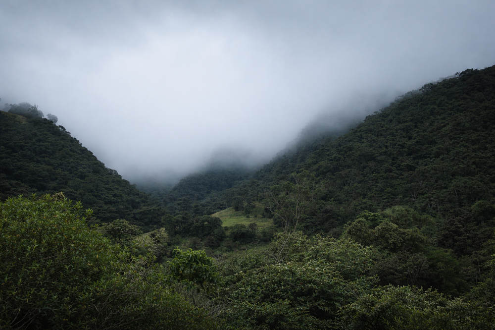

Inicio > Notas críticas > Desde Quisquiza (01 de 20)
Desde Quisquiza (01 de 20)
Coordenadas
Donde entra la niebla
Esta nota forma parte de una serie escrita desde Quisquiza, en los Andes colombianos, donde territorio y trabajo intelectual ya no están separados. Examina cómo ese cruce transforma mi manera de pensar la memoria, la información y las estructuras que las sostienen. Consulte todas las notas en el índice de esta sección.
Desde enero de 2026, vivo y trabajo en Quisquiza, en lo alto de los Andes Orientales de Colombia, dentro del bosque nuboso nativo y no lejos del páramo del Parque Nacional Natural Chingaza, el ecosistema que abastece de agua a Bogotá y a sus ocho millones de habitantes.
Los registros históricos identifican este lugar como territorio del pueblo Muisca. Su presencia no es abstracta. Persiste en nombres (como el propio "Quisquiza"), en la terminología vegetal y animal, y en fragmentos de lenguaje aún ligados a la tierra.
Parte del terreno que rodea mi casa está en proceso de restauración ecológica. El bosque que está más allá, no. Permanece denso, habitado, estructuralmente intacto. Los osos de anteojos se mueven por estas montañas.
(Ese dato deja de ser teórico por las noches).
La niebla entra en la cocina sin pedir permiso. Los insectos cruzan la casa como si las paredes fueran meras sugerencias. Día sí y día también, a pocos metros de la mesa que me sirve de escritorio me encuentro con especies de plantas que no puedo nombrar de inmediato.
(Los límites del conocimiento están muy presentes aquí).
El clima, la altitud, la recuperación del suelo y el contacto diario con la biodiversidad no quedan fuera de mi trabajo. Se meten a las bravas. Los sistemas ya no son diagramas sujetos con chinchetas en el corcho de la pared. Ahora son pendientes que drenan mal, plántulas que dudan sobre su existencia a 8 °C, y raíces que deciden ponerse en huelga ante una tierra demasiado compactada.
A veces ese universo coopera con uno. Otras, no.
(Sí, pasto kikuyu. Te estoy mirando).
Quisquiza no es un decorado. Es la condición en la que ahora se desenvuelve mi labor: escritura, investigación, conferencias, música, arte, dudas. Aquí, el territorio no salpimenta el pensamiento teórico. Interfiere con él. Y algo cambia.
Si sigues este espacio, serás testigo de cómo este lugar que me rodea va entrando progresivamente en mi lenguaje y modifica mi forma de pensar sobre la memoria, la información y las estructuras que las sostienen.